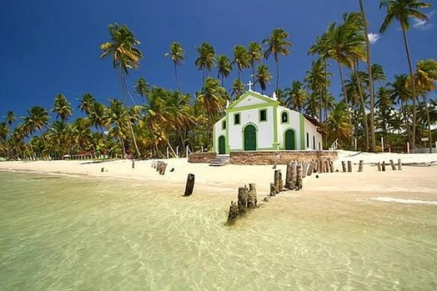

Praias do Brasil
O Brasil é um dos países tropicais conhecidos pelas praias mais bonitas do planeta.Confira as melhores praias para esse verão.
jericoacoara

Jericoacoara é uma praia localizada na vila homônima, no município de Jijoca de Jericoacoara, no estado do Ceará, no Brasil. Está localizada a 295 km a oeste da capital do estado, Fortaleza. Foi eleita em 1994 pelo jornal estadunidense The Washington Post uma das dez praias mais bonitas do planeta.Em 2014, foi eleita pelo Huffington Post a quarta melhor praia da Terra.É um dos locais mais frequentados por praticantes de windsurfe no país. A praia é parte integrante do Parque Nacional de Jericoacoara.
Atrações:
- Pedra furada.
- Duna do Pôr do Sol.
- Igreja Nossa Senhora da Consolação.
- Serrote.
- Farol de Jericoacoara.
- Campo das dunas.
Alter do chão

Localizada no estado do Pará, a apenas 37 km do município de Santarém, Alter do Chão oferece acesso fácil a partir de diferentes pontos do Brasil.
Atrações:
- Ilha do Amor
- Lago Verde
- Serra da Piraoca
- Pontas do Muretá e do Cururu
- Ponta de Pedras
- Ponta do Jari
Maraú

Entendido o conceito, a Península de Maraú está localizada na Costa do Dendê, região do baixo-sul baiano. O Oceano Atlântico banha suas praias do mar de fora e abastece a linda Baía de Camamu, suas ilhas e praias no mar de dentro.
Atrações:
- Praia de Taipu de Fora.
- Praia de Saquaíra.
- Praia de Barra Grande.
- Praia de Algodões.
- Ilha do Goió.
- Ilha Da Pedra Furada.
São Miguel dos Milagres
São Miguel dos Milagres está localizada a cerca de 100 km de Maceió, no litoral Norte de Alagoas. Muita gente chega ao local pelo Aeroporto de Maceió, que é o mas próximo da cidade, mas como esse pedacinho do litoral é cheio de praias lindas, há quem aproveite para viajar pelo litoral pernambucano também e chega pelo Aeroporto do Recife.
Atrações:
Fernando de Noronha

Fernando de Noronha é um arquipélago de origem vulcânica no Oceano Atlântico. Pertencente ao estado de Pernambuco, no nordeste do Brasil, Fernando de Noronha está localizado a 360 km de Natal, 545 km de Recife e 710 km de Fortaleza.
Atrações:
praia arraial do cabo
Arraial do Cabo é um município brasileiro da Região dos Lagos, no estado do Rio de Janeiro. A cidade é costeira, e tem uma altitude média de apenas oito metros. Fundado em 1503 pelo conquistador Américo Vespúcio, foi elevado a município apenas em 1985, após a emancipação de Cabo Frio.
Atrações:
Cuidados no Verão
Todos nós queremos curtir as férias de verão da melhor forma possível.Fique ligado e siga as dicas a seguir.
- Use protetor solar com fator de proteção adequado (FPS 30 ou mais) e reaplique a cada 2 horas, especialmente após entrar na água. A exposição prolongada ao sol pode causar queimaduras, envelhecimento precoce e aumentar o risco de câncer de pele.
- Beba bastante água para manter-se hidratado, já que o calor intenso pode levar à desidratação. Evite consumir apenas bebidas alcoólicas, pois elas podem acelerar a desidratação.
- Algumas praias possuem correntes fortes que podem arrastar nadadores para o mar aberto. Fique atento às bandeiras de sinalização e sempre nade em áreas supervisionadas por salva-vidas.
- Evite o sol entre 10h e 16h, quando os raios ultravioleta (UV) são mais intensos. Se estiver na praia nesse período, busque sombra e use acessórios de proteção, como chapéus, óculos escuros e roupas leves.
- Coma alimentos leves e frescos. Evite comidas de origem duvidosa ou mal conservadas, pois o calor pode acelerar a deterioração e causar intoxicações alimentares.
Esses cuidados garantem maior segurança e conforto durante os dias de praia no verão.
Cuidados com as crianças
Levar as crianças para a praia no verão é uma ótima maneira de aproveitar o sol e o mar, mas é importante seguir alguns cuidados para garantir a segurança e o bem-estar dos pequenos:
- Escolha uma praia segura e estruturada.
- Capriche na hidratação.
- Tenha brinquedos próprios para a praia.
- Proteja as crianças do sol.
- Tenha uma farmacinha e um kit de primeiros socorros.
- Cuide da alimentação.
- Planeje a mala com antecedência.
- Identifique os pequenos.
- além do protetor solar ideal, sempre leve na bolsa dos pequenos uma muda de roupa que possa molhar, chapéu, óculos escuros e chinelos.
Pacotes de Viagens
Abaixo trazemos sugestões de principais empresas para comprar seu pacote de viagens. Lembre-se verifique antes a reputação da empresa, não nos responsabilizamos por golpes. Reserve sua viagem com antecedência e economize.
Clique aqui e confira as promoções da CVC

Clique aqui e confira as promoções da Azul Viagens

Clique aqui e confira as promoções da latamairlines

Criadores do site
Este site foi produzido por alunos do curso de Desenvolvimento JS do SENAI. Abaixo está a localização da unidade em que ocorreu o curso.
"